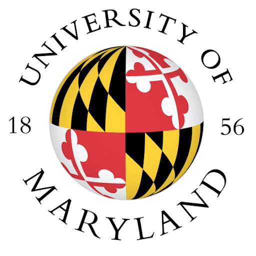
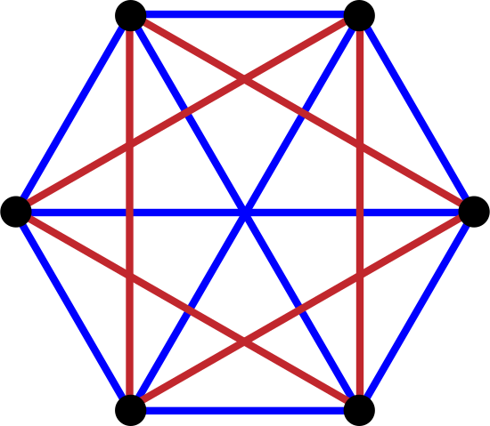

|
I am a first year PhD student in Electrical and Computer Engineering at the University of Maryland. My research philosophy is defined by a "proof-over-heuristic" mindset. While modern deep learning thrives on empirical scaling, I am interested in the theoretical foundations of AI—specifically using optimization theory and high-dimensional geometry to explain why models generalize. Previously, I was a Research Associate at Mohamed bin Zayed University of Artificial Intelligence (MBZUAI), working with Dr. Salman Khan and Prof. Yinon Rudich. I received my B.Sc. (First Class Honours) from the University of Moratuwa. I am also a former International Mathematical Olympiad (IMO) and International Physics Olympiad (IPhO) medalist. I am currently focused on bridging the gap between physics-based constraints and data-driven learning, specifically investigating:
Email / CV / Google Scholar / Github |

Research
|
Yohan Abeysinghe, Muhammad Akhtar Munir, Sanoojan Baliah, Fahad Shahbaz Khan, Yinon Rudich, Salman Khan Nature NPJ Air (Under Review) Paper |
|
Sanoojan Baliah, Yohan Abeysinghe, Rusiru Thushara, Khan Muhammad, Abhinav Dhall, Karthik Nandakumar, Muhammad Haris Khan WACV 2026 |
|
Sanjoy Chowdhury, Mohamed Elmoghany, Yohan Abeysinghe, Junjie Fei, Sayan Nag, Salman Khan, Mohamed Elhoseiny, Dinesh Manocha NeurIPS 2025 Paper Project Page |
Selected Honors
|
Experience

|
Research Assistant July 2024 - July 2025 |

|
Visiting Student Researcher January 2023 - September 2023 Supervisor: Dr. Anusha Withana |
Education
|  |
Ph.D. in Electrical and Computer Engineering August 2025 - Present |

|
B.Sc. (Hons) in Electronics and Telecommunication Engineering Jan 2020 – July 2024 |
Teaching
|
Department of Electrical and Computer Engineering, University of Maryland ENEE324: Engineering Probability - Fall 2025 |
|  |
Sri Lanka Mathematics Olympiad Foundation (SLMOF) Training the Sri Lankan national team for the International Mathematical Olympiad (IMO) 2023 |